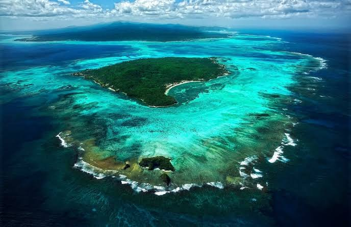
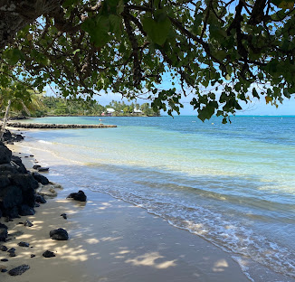

Stop 5: Manono Island
Manono Island is a small island off the coast of Upolu. It is known for its peaceful villages, coastal scenery, and traditional Samoan way of life. Visitors can enjoy the natural environment while respecting village customs.

